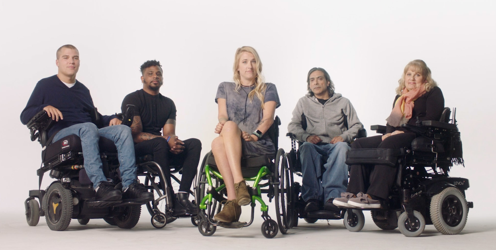
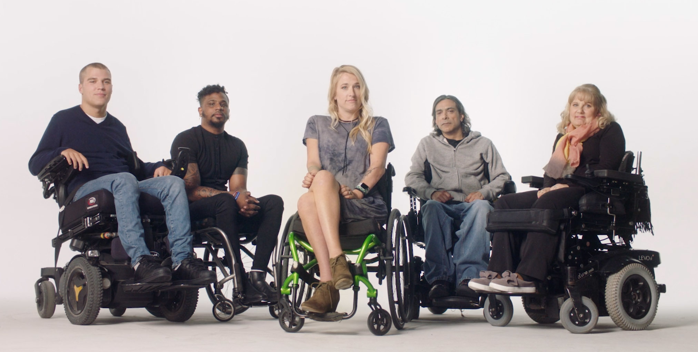

About Head-Mouse Web
Head-Mouse Web is a web application designed for people with spinal cord injuries who have limited mobility and may not be able to use a traditional mouse and keyboard to navigate YouTube. The application uses head and eye movements to control the interface, allowing users to browse, search for, and play videos with ease.
 

How To Use It
To use Head-Mouse Web, you'll need to login or create an account to gain full access to the application and be able to use the YouTube integration. Once you're logged in, you can start browsing through the application by slowly moving your head and eye around the screen while using your left eye to click on the different buttons. The interface is designed to be simple and easy-to-use, with clear visual cues to help guide you through the application.
In addition, Head-Mouse Web includes auto-clicking buttons at the top of the page, which you can use to enable and disable auto-clicking. This feature allows the application to automatically click for you when you have to type something and do not wish to use your left eye. Simply click on the start auto-clicking button to turn it on, and then click on the stop auto-clicking button to turn it off. This feature is especially useful for users who may experience fatigue or discomfort while using their left eye for extended periods of time.
How It Works
Head-Mouse Web uses computer vision technology with the likes of MediaPipe and OpenCV to track the user's head and eye movements. The user does not have to wear any special headset or anything like that, but instead they just need a laptop or a computer that has a camera. The camera then captures the movements of the head and eyes and translates them into on-screen actions. The interface of our application is designed to be simple and intuitive, with large, easy-to-see buttons and clear visual cues.
Proof Of Concept
Our proof of concept uses YouTube as the primary platform to demonstrate the capabilities of Head-Mouse Web. Users can search for videos, play and pause them, and control the volume and playback speed, all with just their head and eye movements. The application also includes features like auto-clicking and scrolling, so that users can easily browse through long lists of search results.